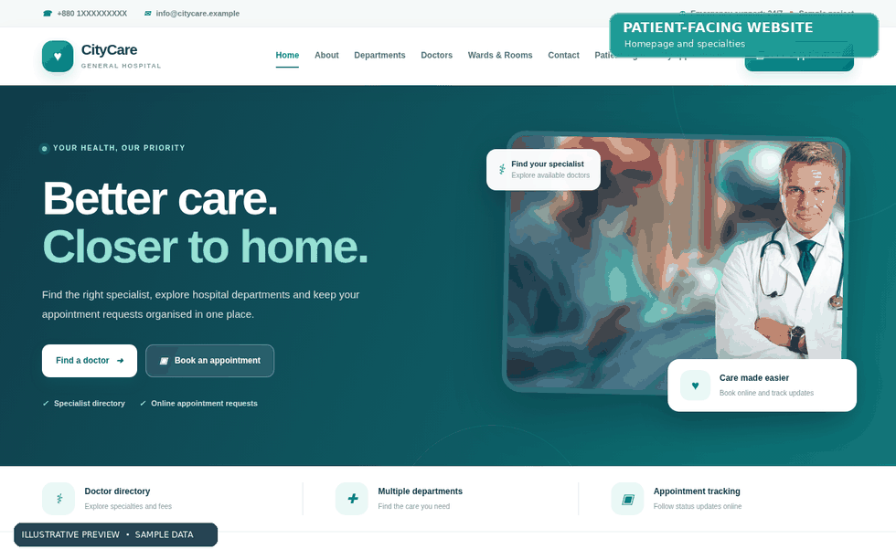
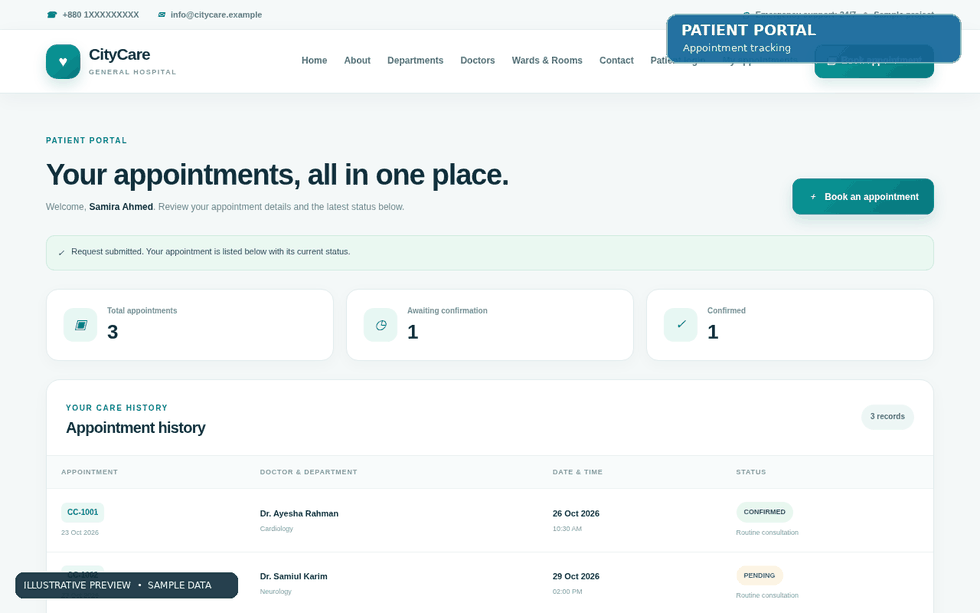
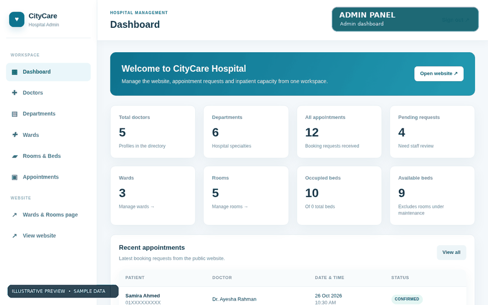

CityCare Hospital
A hospital website, patient appointment portal and role-protected administrative system built in Java.

Why I built it
A static hospital site can show information, but it cannot by itself help a patient follow an appointment or help staff keep that information updated. This project let me explore the full journey between public content, a signed-in patient and an administrator working with shared records.
Who I designed it for
Site visitors browsing departments and doctors; registered patients submitting and reviewing appointments; and authorised hospital staff managing service information and selected operational records. Names, doctors, appointments and rooms in the demo are fictional.
The core user journey
How I approached the problem
I focused on connecting the important user tasks to working application and data flows.
Define distinct roles
I treated public browsing, patient accounts and staff administration as separate experiences with different permissions and information needs.
Model the records
I structured doctors, departments, patients, appointments, wards and rooms as related Java entities with Spring Data JPA and MySQL.
Build the end-to-end request flow
I used Spring MVC controllers, Thymeleaf forms/templates and validation to take appointment inputs, persist records and surface status changes.
Protect and extend the system
I added Spring Security-based access control and supported admin workflows for maintaining hospital content and room/bed details.
Why I chose this approach
Spring Boot is a good fit for learning structured back-end architecture: controllers handle requests, entities represent persistent records, services hold supporting logic, and security gates protected pages. Server-rendered Thymeleaf pages also allowed me to focus on the Java application flow rather than introducing an additional JavaScript framework.
The result, without inflated numbers
A local educational prototype that ties together doctor and department listings, account-based appointment history, a staff dashboard, and ward/room administration. The included animated previews illustrate the UI with sample records and are not proof of live clinical use.
What I learned while building
I became more deliberate about thinking in terms of roles, data ownership and state transitions—for example, an appointment is not complete just because a form submits; the patient should be able to see the status that staff later update. I also learned to keep example healthcare data visibly separate from real patient information.
What I would improve next
Introduce stronger workflow and integration tests, production-grade auditing and privacy controls, and real admission/bed-allocation logic before considering actual hospital use.
A closer look at the project
These previews help explain the interface and flow. They are labelled honestly where fictional data or simulated behaviour is involved.

